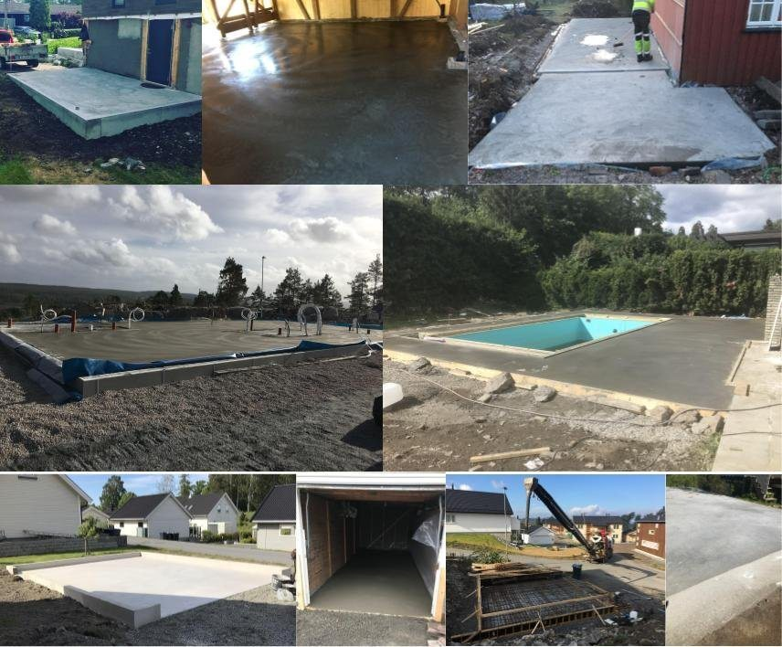

Betongfaget.
Fra grunn til finish.
Forskalingssnekker og gulvstøper med kunnskap, erfaring og et stort engasjement for faget.

Et godt gulv starter
med godt forarbeid.
Jeg støper gulv for private og næring: kjeller, terrasser, bolig og garasjer. Betonggulv som skal slipes, brettskures eller stålglattes.
Ønsker dere å utføre deler av jobben selv, støtter jeg dere med tips og råd underveis. Godt forarbeid gjør jobben min enklere, og dere får et bedre gulv.
På YouTube viser jeg frem når jeg støper gulv, med tips og råd som kan være nyttige for prosjektet ditt.
Snakk med meg om gulvstøp ↗Små detaljer.
Solide konstruksjoner.
Trapper og kjellernedganger
Forskaling og støp tilpasset eksisterende bygg og terreng.
↗Støttemurer
Støttemurer, også bordforskalte og tilpasset fjell.
↗Fundamentering
Grunnmurer, ringmurer og betongplater som gir et godt grunnlag.
↗Betonggarasjer
Betongarbeid til garasjer og stålglattede garasjegulv.
↗Rådgivning og andre håndverkstjenester
Hjelp til en riktig start og gode løsninger gjennom byggeprosessen. Andre håndverksrelaterte tjenester ved behov.
↗